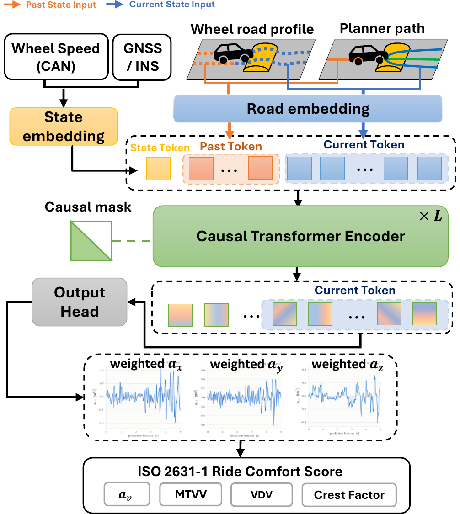
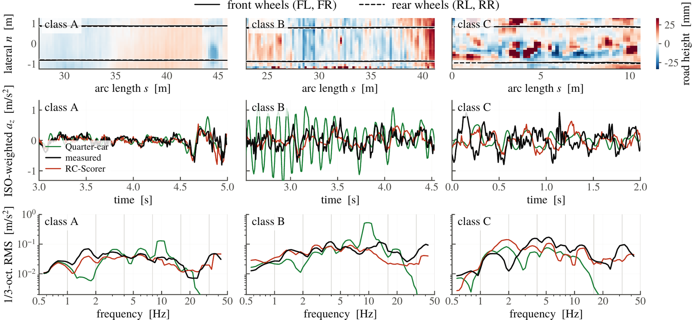
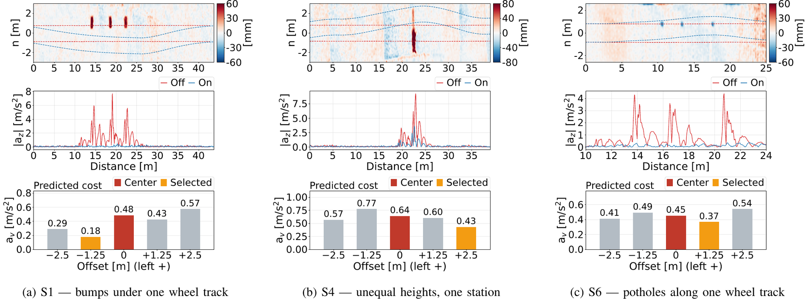
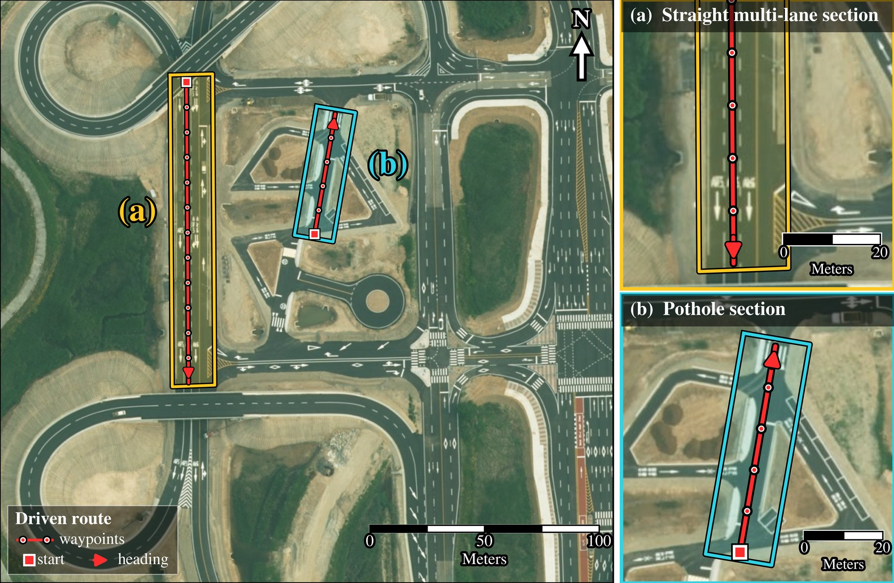

Lidar scans are deskewed and accumulated into a local elevation map of road
height. The wheel-path profile is re-extracted under each candidate the
lattice planner emits and the model re-evaluated, and the resulting
ride-comfort cost joins the centerline, consistency and curvature terms in
candidate selection.
Abstract
Ride comfort is a primary measure of quality in autonomous driving
services, yet planners usually account for it through jerk and similar
terms acting on instantaneous motion, and rarely evaluate the comfort of
the whole trajectory — which is fixed once the trajectory is selected.
ISO 2631-1, the international standard for whole-body vibration, scores
comfort by weighting body acceleration according to human sensitivity at
each frequency, so that a slow sway and a sharp shudder are not counted
alike. Computing that score before a trajectory is driven has relied on a
vehicle dynamics model calibrated to each specific vehicle.
RC-Scorer is a causal Transformer that reads the road
under a candidate trajectory and predicts its frequency-weighted
acceleration waveform, trained on driving logs with no vehicle dynamics
model and no vehicle-specific calibration. It is more accurate than
methods based on vehicle models or road-roughness indices, and predicts
what they cannot: the weighted acceleration on all three axes, and the
additional measures the standard requires when a ride contains sudden
jolts. On an autonomous vehicle it reads a road profile built from the
vehicle's own lidar while driving and re-scores every candidate at run
time, reducing the measured vibration total value over obstacles by
75–84 % in the layouts where they can be fully avoided.
Method

The four wheel-path road channels and the candidate trajectory are
embedded as a sequence of along-path tokens, prefixed by a single token
carrying the vehicle state. Causal-masked encoder layers and an output
head emit the three-axis weighted waveform, which reduces to the scalar
av the planner uses.
The quantity the standard defines
Each axis waveform is filtered by the weighting ISO 2631-1 prescribes
for that direction — Wd horizontal, Wk vertical —
and the three translational axes combine into the point vibration total
value av. Where a signal is dominated by shocks the basic RMS
understates exposure, and the standard falls back on three further
descriptors defined on a single weighted axis: MTVV, VDV and the crest
factor. RC-Scorer produces all of them.
Scored per candidate, not per road
For each candidate the planner emits, the road height under the four
tire contact points is sampled along that candidate — 500 samples at
100 Hz — and passed with the candidate kinematics and the current
vehicle state to the model, which returns the three-axis weighted
waveform over the next 5 s. The planner adds
av(τk) to the centerline, consistency and curvature
costs of the lattice and executes the lowest-cost candidate. Candidates
are scored together in a batch.
Causality, and no vehicle model
Future road geometry cannot cause present vibration, and a causal mask
over self-attention enforces that rather than leaving it to the data.
Three pre-norm layers of width sixty-four read seventy-one tokens and
hold 175,070 parameters; of the seventy road tokens, fifty cover the
candidate's next 5 s and twenty the 2 s already driven, the
latter also carrying the measured inertial channels. The model has no
explicit vehicle representation and no vehicle-specific calibration.
Trained on the quantity that is reported
Because the reported quantity is a weighted RMS, that quantity is placed
in the loss: a waveform term, a relative band-energy term over seven
octaves from 0.5 to 50 Hz, and a moment term on the av
distribution. The log ratio makes the band penalty relative, so quiet
bands are not swamped by loud ones. Training uses post-processed road
profiles; deployment reads ones the vehicle accumulates at run time,
where unobserved stretches are filled by linear interpolation.
Experiments
Offline
CARD, a multi-country road dataset recorded in Germany and Italy, giving
four-wheel contact-point height, the planned trajectory and synchronised
IMU together. The held-out split is 29 sequences and 13,875 windows,
grouped by trajectory overlap so that no road appears on both sides. All
methods share one weighting implementation and identical wheel-path
inputs, so differences are attributable to the response model alone.
Closed loop
An autonomous Hyundai Ioniq 5 with a roof-mounted 128-channel lidar at
10 Hz and a 100 Hz RTK-GNSS/INS for ground truth. A lattice
planner emits five candidates at lateral offsets 0, ±1.25 and
±2.5 m. RC-Scorer is deployed unchanged from the offline
evaluation, but the profile it reads is no longer the post-processed one
it was trained on.
Accuracy against model-based baselines
Mean absolute error on the offline validation split. The zero
column predicts 0 for every window, so its error is the measured mean of
each row. A dash marks a quantity the method cannot produce, not one left
unmeasured.
Mean absolute error on the offline validation split
Metric
Baselines
Proposed
zero
IRI
AG
QC
RC-Scorer
weighted RMS m s−2
aw,x
0.1670
—
—
—
0.0328
aw,y
0.1848
—
—
—
0.0229
aw,z
0.2581
0.0983
0.0900
0.0774
0.0377
av
0.3735
0.1031
—
—
0.0445
MTVV m s−2
aw,x
0.3114
—
—
—
0.0766
aw,y
0.3135
—
—
—
0.0579
aw,z
0.4071
—
—
0.1349
0.0692
VDV m/s1.75
aw,x
0.4176
—
—
—
0.0904
aw,y
0.4293
—
—
—
0.0675
aw,z
0.5934
—
—
0.1915
0.1016
crest factor –
aw,x
—
—
—
—
0.7119
aw,y
—
—
—
—
0.5289
aw,z
—
—
—
0.7729
0.7369
The dashes report a capability gap before the numbers report an accuracy
gap: MTVV, VDV and the crest factor need a waveform to exist, and a
vertical-only state produces no horizontal response at all. On av
— the one direct comparison, where IRI and RC-Scorer predict the same
quantity against the same reference mean — RC-Scorer is 2.3 times more
accurate. Trained instead on 15 sequences from the closed-loop vehicle, it
reaches an av MAE of 0.1138 against 0.4292 for zero,
with no vehicle-specific quantity fitted in either case.

Three surfaces from the offline split, one column per ISO 8608 roughness
class. Top: the accumulated height map with the four wheel paths.
Middle: the ISO-weighted vertical acceleration. Bottom:
its one-third-octave spectrum. On the typical surface the quarter-car
oscillates at its own wheel-hop resonance near 10 Hz, a peak several
times the measurement; Ahlin–Granlund and the IRI regression produce
one scalar per window and so carry no curve at all.
Components of the loss
ISO-W applies the ISO weighting to the training target,
Band is the relative band-energy term and
Moment is the term on the av distribution. The
three middle columns each remove one term from the full configuration.
Component ablation of the loss function, MAE per row
Metric
none
ISO-W only
− ISO-W
− Band
− Moment
full
aw,x
0.0332
0.0525
0.0410
0.0425
0.0332
0.0328
aw,y
0.0254
0.0316
0.0647
0.0301
0.0236
0.0229
aw,z
0.0670
0.0612
0.0699
0.0454
0.0396
0.0377
av
0.0643
0.0814
0.0884
0.0498
0.0515
0.0445
MTVV (az)
0.0977
0.0873
0.1470
0.0764
0.0637
0.0692
VDV (az)
0.1587
0.1406
0.1996
0.1132
0.0949
0.1016
crest (az)
0.6731
0.6187
0.7038
0.6510
0.6012
0.7369
Weighting the target alone hurts — no loss term reads the spectral
distribution it changes — and the band log-ratio term is what reads it. The
moment term then buys a further 0.0070 on av at a price visible in
the lower block, where the configuration without it is the more accurate on
all three descriptors.
Obstacle layouts
Six layouts, seen from above with the vehicle approaching from the left,
each putting a different question to the scorer. S1–S3 place speed
bumps under one or both wheel tracks and S6 potholes along one track, so
avoidance is available. S4 places bumps of unequal height at the same
station, where no candidate is clean. S5 places them between the wheel
tracks, where moving is the wrong answer.
scorer disabledscorer enabled
Closed loop on the vehicle
Six pairs, one per layout at a nominal 15 km h−1,
scorer disabled and enabled on the same course. The criterion is
av, so the lateral and longitudinal acceleration the avoidance
manoeuvre produces is charged against the vertical improvement it buys.
Paired closed-loop comparison, in-zone measured values, scorer disabled to enabled
Cell
axis-weighted RMS m s−2
ISO 2631-1 av
shock descriptors
aw,x
aw,y
aw,z
av
Δav
MTVVz
VDVz
Avoidance available
S1
0.161 → 0.050
0.552 → 0.205
1.194 → 0.107
1.325 → 0.236
−82 %
1.926 → 0.145
3.129 → 0.224
S2
0.164 → 0.042
0.509 → 0.146
0.880 → 0.076
1.030 → 0.170
−84 %
1.542 → 0.119
2.999 → 0.183
S3
0.211 → 0.053
0.600 → 0.249
0.905 → 0.095
1.107 → 0.272
−75 %
1.604 → 0.155
2.462 → 0.250
S6
0.128 → 0.049
0.449 → 0.199
0.927 → 0.094
1.038 → 0.225
−78 %
1.459 → 0.119
2.217 → 0.172
No clean candidate — partial by design
S4
0.284 → 0.083
0.546 → 0.250
1.261 → 0.467
1.374 → 0.536
−61 %
2.416 → 0.892
3.398 → 1.355
Moving is the wrong answer — center held
S5
0.050 → 0.051
0.023 → 0.022
0.075 → 0.068
0.093 → 0.088
−6 %
0.092 → 0.086
0.135 → 0.126
The three axes are given beside av so that a reduction produced by
the road can be told from one produced by the manoeuvre. In S5 both runs keep
their wheels clear and the enabled scorer selects the center in all 75
recorded cycles; in S6 it shifts left by 0.47 m on average. Scoring five
candidates takes 88–109 ms on a Jetson AGX Orin.

Closed-loop behaviour at 15 km h−1. Each panel
shows the accumulated road-height grid with both driven trajectories, the
measured vertical acceleration over the obstacle zone, and the
per-candidate predicted av at the approach.

a
Straight multi-lane section, driven north to south — the bump layouts
S1–S5.
b
Narrow walled corridor, driven south to north — the pothole layout S6.
Satellite imagery: VWorld, Ministry of Land,
Infrastructure and Transport, Republic of Korea.
Limitations
Each cell is one disabled and one enabled run, so the reductions are point
estimates, and only the nominal 15 km h−1
setting is reported. Untraversed candidates have no measured outcome, so the
predicted ordering is not validated by the observed path changes, and the
offline split is lower in amplitude than the obstacle zones — the closed-loop
result supports the ordering, not accuracy at those levels. The change of
road input is shown to work, not characterized: dropout, vertical precision
and resolution are not varied independently.
Videos
One clip per obstacle layout, with the scorer enabled. The forward camera,
the cabin and the RViz view of the scored candidate set run side by side on
a common clock. Faces and vehicle markings are masked.
—
No recording matches this filter.
BibTeX
@inproceedings{rcscorer,
title = {RC-Scorer: Standardized Ride Comfort Prediction for
Candidate Trajectories Without a Vehicle Model},
author = {Anonymous},
booktitle = {Under review},
year = {2027}
}